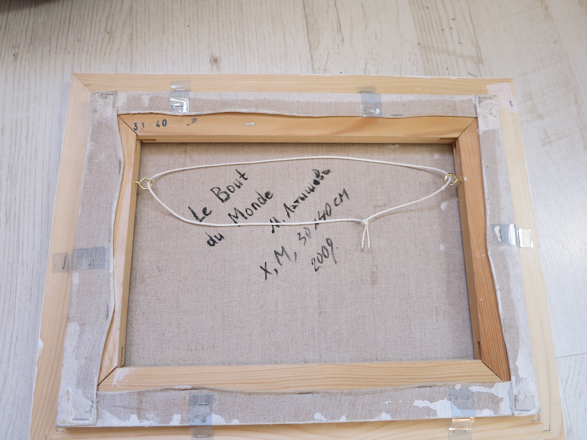
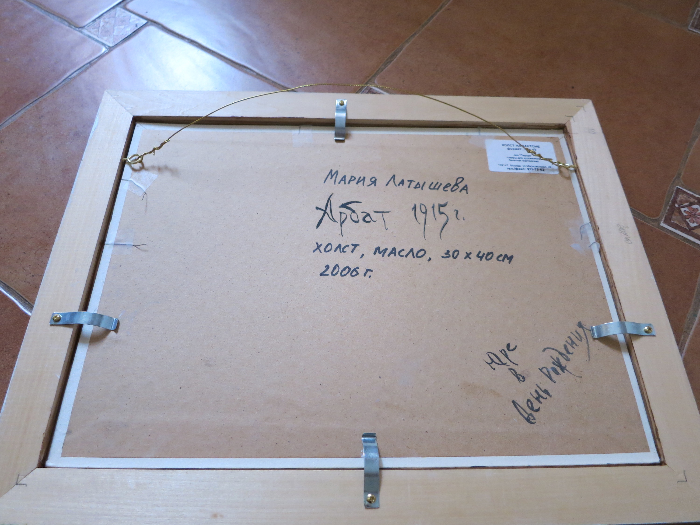
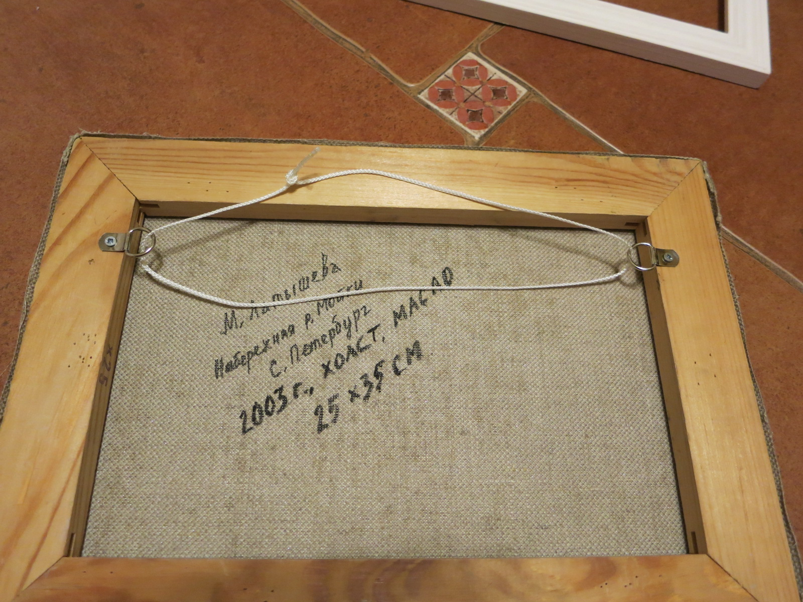

How to hung a painting on a wall?
In this post I will show several ways to attach a baguette to your
painting and to hung it up on a wall:

Using transparent cut outs from a plastic bootle

Using specific hanging deviced sold in an artist shop

Using regular nails you can buy in any construction shop
Share this story with your friends